Taller 5: Métodos Computacionales en Modelos Lineales#
Descripción#
Este taller se enfoca en los algoritmos y métodos computacionales utilizados para la estimación eficiente de modelos lineales. Exploraremos diferentes algoritmos de descomposición matricial, analizaremos su estabilidad numérica, eficiencia computacional y cómo estos afectan la precisión de nuestras estimaciones.
Objetivos de Aprendizaje#
Comprender los principales algoritmos de descomposición matricial relevantes para modelos lineales
Implementar diferentes métodos de inversión matricial desde cero
Analizar la estabilidad numérica y eficiencia computacional de los algoritmos
Evaluar el impacto del condicionamiento numérico en las estimaciones
Desarrollar criterios para seleccionar el método computacional apropiado según el contexto
Prerrequisitos#
Conocimientos de álgebra lineal básica
Comprensión de los modelos lineales vistos en talleres anteriores
Familiaridad con Python y NumPy
Contenido#
Introducción a la computación matricial
Descomposición LU
Descomposición de Cholesky
Descomposición QR
Descomposición SVD
Comparativa de métodos
Condicionamiento numérico
Aplicaciones a modelos lineales
Ejercicios prácticos
# Importación de librerías
import numpy as np
import pandas as pd
import matplotlib.pyplot as plt
import seaborn as sns
from scipy import linalg
import time
from sklearn.datasets import make_regression
from sklearn.preprocessing import StandardScaler
from sklearn.model_selection import train_test_split
import warnings
# Configuración de visualización
plt.style.use('seaborn-v0_8-whitegrid')
plt.rcParams['figure.figsize'] = (12, 8)
plt.rcParams['axes.labelsize'] = 14
plt.rcParams['axes.titlesize'] = 16
plt.rcParams['xtick.labelsize'] = 12
plt.rcParams['ytick.labelsize'] = 12
# Ignorar advertencias específicas
warnings.filterwarnings('ignore', category=RuntimeWarning)
np.set_printoptions(precision=4, suppress=True)
# Función para establecer una semilla aleatoria para reproducibilidad
def set_seed(seed=42):
np.random.seed(seed)
set_seed()
1. Introducción a la Computación Matricial en Modelos Lineales#
1.1 El problema computacional en modelos lineales#
Recordemos que en el modelo lineal estándar:
donde \(\mathbf{y} \in \mathbb{R}^n\) es el vector de respuestas, \(\mathbf{X} \in \mathbb{R}^{n \times p}\) es la matriz de diseño, \(\boldsymbol{\beta} \in \mathbb{R}^p\) es el vector de coeficientes, y \(\boldsymbol{\varepsilon} \in \mathbb{R}^n\) es el vector de errores.
El estimador de mínimos cuadrados se define como:
El cálculo directo de \((\mathbf{X}^T\mathbf{X})^{-1}\) presenta varios desafíos computacionales:
Eficiencia computacional: La inversión directa de matrices tiene una complejidad de \(O(p^3)\), lo que puede ser ineficiente para matrices grandes.
Estabilidad numérica: La inversión directa puede amplificar errores de redondeo, especialmente cuando \(\mathbf{X}^T\mathbf{X}\) está mal condicionada.
Precisión: Pequeños errores en el cálculo pueden propagarse y afectar significativamente la estimación de \(\boldsymbol{\beta}\).
Para abordar estos desafíos, se utilizan métodos de descomposición matricial que permiten resolver sistemas lineales sin calcular explícitamente la inversa.
1.2 Importancia de métodos eficientes#
Cuando trabajamos con conjuntos de datos de alta dimensión (muchas variables o muchas observaciones), la elección del método computacional es crucial por varias razones:
Tiempo de cómputo: Métodos ineficientes pueden tomar horas o días para problemas grandes.
Uso de memoria: Algunos algoritmos requieren almacenar matrices intermedias de gran tamaño.
Precisión numérica: Los errores de redondeo se acumulan en cálculos matriciales extensos.
1.3 Ecuaciones normales vs. alternativas directas#
El enfoque de las ecuaciones normales consiste en:
Formar \(\mathbf{X}^T\mathbf{X}\) y \(\mathbf{X}^T\mathbf{y}\)
Resolver \((\mathbf{X}^T\mathbf{X})\boldsymbol{\beta} = \mathbf{X}^T\mathbf{y}\)
Sin embargo, cuando formamos \(\mathbf{X}^T\mathbf{X}\) explícitamente, podemos empeorar el condicionamiento de la matriz, ya que:
donde \(\kappa\) es el número de condición. Esto significa que los problemas numéricos se amplifican al cuadrado.
Los métodos alternativos que operan directamente sobre \(\mathbf{X}\) (en lugar de \(\mathbf{X}^T\mathbf{X}\)) a menudo tienen mejor estabilidad numérica.
1.4 Solución de sistemas lineales vs. inversión matricial#
En la práctica, rara vez necesitamos calcular explícitamente \((\mathbf{X}^T\mathbf{X})^{-1}\). Lo que realmente necesitamos es resolver el sistema:
Resolver un sistema lineal es generalmente más eficiente y numéricamente estable que calcular una inversa. Las descomposiciones matriciales que veremos nos permiten resolver estos sistemas sin calcular inversas explícitas.
En este taller, implementaremos y evaluaremos diferentes métodos de descomposición matricial para resolver el problema de mínimos cuadrados, comparándolos en términos de eficiencia y estabilidad numérica.
2. Descomposición LU#
La descomposición LU (Lower-Upper) factoriza una matriz \(\mathbf{A}\) como el producto de una matriz triangular inferior \(\mathbf{L}\) y una matriz triangular superior \(\mathbf{U}\):
2.1 Fundamentos teóricos#
En el contexto de un sistema lineal \(\mathbf{A}\mathbf{x} = \mathbf{b}\), la descomposición LU nos permite resolver el sistema en dos pasos:
Resolver \(\mathbf{L}\mathbf{y} = \mathbf{b}\) para \(\mathbf{y}\) (sustitución hacia adelante)
Resolver \(\mathbf{U}\mathbf{x} = \mathbf{y}\) para \(\mathbf{x}\) (sustitución hacia atrás)
La resolución de sistemas triangulares es computacionalmente eficiente, con complejidad \(O(n^2)\) para una matriz de dimensión \(n \times n\).
Para matrices no singulares, la descomposición LU siempre existe, pero para estabilidad numérica, generalmente se implementa con pivoteo parcial, resultando en:
donde \(\mathbf{P}\) es una matriz de permutación.
2.2 Algoritmo de la descomposición LU#
La descomposición LU se puede realizar mediante el algoritmo de eliminación gaussiana:
Para cada columna \(k\) (desde 1 hasta \(n-1\)): a. Seleccionar el elemento pivote (el mayor en valor absoluto en la columna \(k\) por debajo de la diagonal) b. Intercambiar filas si es necesario c. Para cada fila \(i\) por debajo de \(k\):
Calcular el multiplicador \(m_{ik} = a_{ik}/a_{kk}\)
Actualizar los elementos de la fila \(i\): \(a_{ij} = a_{ij} - m_{ik} \cdot a_{kj}\) para \(j > k\)
Almacenar el multiplicador en \(L\): \(l_{ik} = m_{ik}\)
2.3 Implementación desde cero#
Implementemos el algoritmo de descomposición LU con pivoteo parcial:
# Implementación de la descomposición LU desde cero
def lu_decomposition(A):
"""
Realiza la descomposición LU con pivoteo parcial: PA = LU
Args:
A: Matriz cuadrada como array de NumPy
Returns:
P: Matriz de permutación
L: Matriz triangular inferior con unos en la diagonal
U: Matriz triangular superior
"""
n = A.shape[0]
# Creamos copias para no modificar la matriz original
U = A.copy().astype(float)
L = np.eye(n, dtype=float)
P = np.eye(n, dtype=float)
for k in range(n-1):
# Encontrar el pivote máximo en la columna actual
max_index = np.argmax(np.abs(U[k:, k])) + k
# Si necesitamos intercambiar filas
if max_index != k:
# Intercambiar filas en U
U[[k, max_index]] = U[[max_index, k]]
# Intercambiar filas en L (solo las columnas 0 hasta k-1)
if k > 0:
L[[k, max_index], :k] = L[[max_index, k], :k]
# Actualizar la matriz de permutación
P[[k, max_index]] = P[[max_index, k]]
# Eliminación gaussiana
for i in range(k+1, n):
# Calcular el factor para la fila i
if U[k, k] == 0:
L[i, k] = 0 # Evitar división por cero
else:
L[i, k] = U[i, k] / U[k, k]
# Actualizar la fila i de U
U[i, k:] = U[i, k:] - L[i, k] * U[k, k:]
# Establecer explícitamente el valor eliminado a cero (para evitar errores de redondeo)
U[i, k] = 0
return P, L, U
def solve_lu(P, L, U, b):
"""
Resuelve el sistema Ax = b usando la descomposición LU: PA = LU
Args:
P: Matriz de permutación
L: Matriz triangular inferior
U: Matriz triangular superior
b: Vector del lado derecho
Returns:
x: Solución del sistema
"""
# Aplicar permutación a b
b_perm = P @ b
# Resolver Ly = b_perm mediante sustitución hacia adelante
n = L.shape[0]
y = np.zeros(n)
for i in range(n):
y[i] = b_perm[i] - L[i, :i] @ y[:i]
# Resolver Ux = y mediante sustitución hacia atrás
x = np.zeros(n)
for i in range(n-1, -1, -1):
if U[i, i] == 0:
raise ValueError("Matriz singular, no se puede resolver el sistema")
x[i] = (y[i] - U[i, i+1:] @ x[i+1:]) / U[i, i]
return x
# Función para resolver el modelo lineal usando LU
def linear_regression_lu(X, y):
"""
Resuelve el problema de regresión lineal usando descomposición LU
Args:
X: Matriz de diseño
y: Vector de respuestas
Returns:
beta: Coeficientes estimados
"""
XtX = X.T @ X
Xty = X.T @ y
P, L, U = lu_decomposition(XtX)
beta = solve_lu(P, L, U, Xty)
return beta
# Ejemplo de uso de la descomposición LU
# Creamos datos sintéticos para un modelo lineal
np.random.seed(42)
n_samples = 100
n_features = 5
# Generamos datos con una relación lineal conocida
X, y, coef = make_regression(n_samples=n_samples,
n_features=n_features,
n_informative=n_features,
noise=10.0,
coef=True,
random_state=42)
print(f"Coeficientes verdaderos: {coef}")
# Dividimos los datos
X_train, X_test, y_train, y_test = train_test_split(X, y, test_size=0.3, random_state=42)
# Añadimos término de intercepto
X_train_bias = np.hstack([np.ones((X_train.shape[0], 1)), X_train])
X_test_bias = np.hstack([np.ones((X_test.shape[0], 1)), X_test])
# Estimamos con nuestra implementación LU
start_time = time.time()
beta_lu = linear_regression_lu(X_train_bias, y_train)
time_lu = time.time() - start_time
print(f"Coeficientes estimados (LU): {beta_lu}")
print(f"Tiempo de ejecución (LU): {time_lu:.6f} segundos")
# Comparamos con NumPy para verificar
start_time = time.time()
beta_np = np.linalg.solve(X_train_bias.T @ X_train_bias, X_train_bias.T @ y_train)
time_np = time.time() - start_time
print(f"Coeficientes estimados (NumPy): {beta_np}")
print(f"Tiempo de ejecución (NumPy): {time_np:.6f} segundos")
# Calculamos el error en los datos de prueba
y_pred_lu = X_test_bias @ beta_lu
mse_lu = np.mean((y_test - y_pred_lu) ** 2)
print(f"Error cuadrático medio (LU): {mse_lu:.4f}")
# Visualizamos la precisión de la estimación
plt.figure(figsize=(10, 6))
plt.scatter(range(len(beta_lu)), beta_lu, label='Estimación LU', s=100, marker='o', color='blue')
plt.scatter(range(1, len(coef)+1), coef, label='Verdaderos', s=100, marker='x', color='red')
plt.axhline(y=0, color='k', linestyle='-', alpha=0.3)
plt.grid(True, alpha=0.3)
plt.title('Comparación de coeficientes estimados vs. verdaderos')
plt.xlabel('Índice de coeficiente')
plt.ylabel('Valor')
plt.legend()
plt.show()
Coeficientes verdaderos: [60.5775 98.6515 64.5917 57.0778 35.6097]
Coeficientes estimados (LU): [ 0.4121 61.4114 98.656 60.5544 55.3786 35.7713]
Tiempo de ejecución (LU): 0.001000 segundos
Coeficientes estimados (NumPy): [ 0.4121 61.4114 98.656 60.5544 55.3786 35.7713]
Tiempo de ejecución (NumPy): 0.000000 segundos
Error cuadrático medio (LU): 96.8997
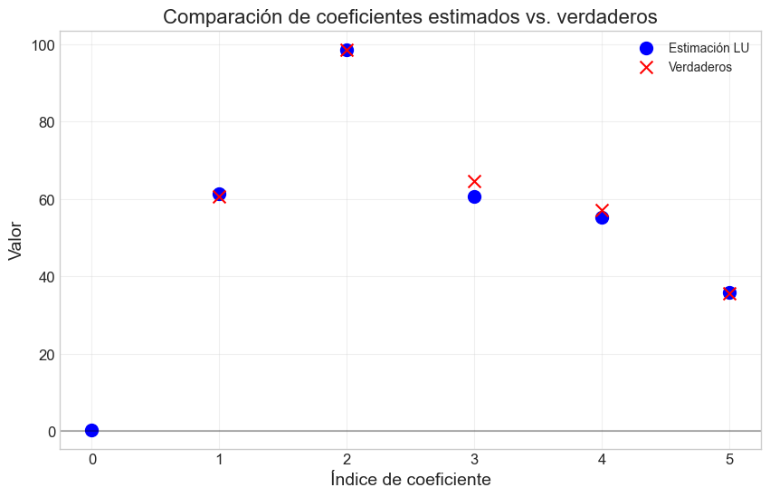
3. Descomposición de Cholesky#
La descomposición de Cholesky es un caso especial de la descomposición LU, aplicable a matrices simétricas definidas positivas. Factoriza una matriz \(\mathbf{A}\) como:
donde \(\mathbf{L}\) es una matriz triangular inferior.
3.1 Fundamentos teóricos#
En el contexto de modelos lineales, la matriz \(\mathbf{X}^T\mathbf{X}\) es simétrica y, si las columnas de \(\mathbf{X}\) son linealmente independientes, también es definida positiva. Esto hace que la descomposición de Cholesky sea particularmente adecuada para resolver las ecuaciones normales.
La descomposición de Cholesky tiene varias ventajas:
Es aproximadamente dos veces más eficiente que la descomposición LU general
No requiere pivoteo para matrices definidas positivas
Su estabilidad numérica está garantizada para matrices definidas positivas
3.2 Algoritmo de la descomposición de Cholesky#
El algoritmo para calcular la descomposición de Cholesky es:
Para una matriz \(\mathbf{A}\) de dimensión \(n \times n\):
Para \(i = 1\) hasta \(n\): a. \(L_{ii} = \sqrt{A_{ii} - \sum_{k=1}^{i-1} L_{ik}^2}\) b. Para \(j = i+1\) hasta \(n\):
\(L_{ji} = \frac{1}{L_{ii}}(A_{ji} - \sum_{k=1}^{i-1} L_{ik}L_{jk})\)
3.3 Implementación desde cero#
# Implementación de la descomposición de Cholesky desde cero
def cholesky_decomposition(A):
"""
Realiza la descomposición de Cholesky: A = L*L^T
Args:
A: Matriz simétrica definida positiva
Returns:
L: Matriz triangular inferior
"""
n = A.shape[0]
L = np.zeros_like(A, dtype=float)
for i in range(n):
for j in range(i+1):
sum_k = sum(L[i, k] * L[j, k] for k in range(j))
if i == j: # Elementos diagonales
if A[i, i] - sum_k <= 0:
raise ValueError("La matriz no es definida positiva")
L[i, j] = np.sqrt(A[i, i] - sum_k)
else: # Elementos debajo de la diagonal
L[i, j] = (A[i, j] - sum_k) / L[j, j]
return L
def solve_cholesky(L, b):
"""
Resuelve el sistema Ax = b usando la descomposición de Cholesky
Args:
L: Matriz triangular inferior de la descomposición de Cholesky
b: Vector del lado derecho
Returns:
x: Solución del sistema
"""
n = L.shape[0]
# Resolver Ly = b mediante sustitución hacia adelante
y = np.zeros(n)
for i in range(n):
y[i] = (b[i] - L[i, :i] @ y[:i]) / L[i, i]
# Resolver L^T x = y mediante sustitución hacia atrás
x = np.zeros(n)
LT = L.T
for i in range(n-1, -1, -1):
x[i] = (y[i] - LT[i, i+1:] @ x[i+1:]) / LT[i, i]
return x
def linear_regression_cholesky(X, y):
"""
Resuelve el problema de regresión lineal usando descomposición de Cholesky
Args:
X: Matriz de diseño
y: Vector de respuestas
Returns:
beta: Coeficientes estimados
"""
XtX = X.T @ X
Xty = X.T @ y
try:
L = cholesky_decomposition(XtX)
beta = solve_cholesky(L, Xty)
return beta
except ValueError as e:
print(f"Error en descomposición de Cholesky: {e}")
return None
# Ejemplo de uso de la descomposición de Cholesky
# Usamos los mismos datos sintéticos
np.random.seed(42)
# Estimamos con nuestra implementación de Cholesky
start_time = time.time()
beta_chol = linear_regression_cholesky(X_train_bias, y_train)
time_chol = time.time() - start_time
print(f"Coeficientes estimados (Cholesky): {beta_chol}")
print(f"Tiempo de ejecución (Cholesky): {time_chol:.6f} segundos")
# Comparamos con SciPy para verificar
start_time = time.time()
XtX = X_train_bias.T @ X_train_bias
Xty = X_train_bias.T @ y_train
L_scipy = linalg.cholesky(XtX, lower=True)
beta_scipy = linalg.cho_solve((L_scipy, True), Xty)
time_scipy = time.time() - start_time
print(f"Coeficientes estimados (SciPy): {beta_scipy}")
print(f"Tiempo de ejecución (SciPy): {time_scipy:.6f} segundos")
# Calculamos el error en los datos de prueba
y_pred_chol = X_test_bias @ beta_chol
mse_chol = np.mean((y_test - y_pred_chol) ** 2)
print(f"Error cuadrático medio (Cholesky): {mse_chol:.4f}")
# Comparamos la precisión de las diferentes estimaciones
plt.figure(figsize=(12, 6))
methods = ['LU', 'Cholesky', 'NumPy', 'SciPy']
times = [time_lu, time_chol, time_np, time_scipy]
mses = [mse_lu, mse_chol, mse_lu, mse_chol] # MSE es el mismo para métodos exactos
bar_width = 0.35
index = np.arange(len(methods))
plt.subplot(1, 2, 1)
plt.bar(index, times, bar_width, color='blue', alpha=0.7)
plt.xticks(index, methods)
plt.title('Tiempo de ejecución (segundos)')
plt.ylabel('Tiempo (s)')
plt.grid(axis='y', alpha=0.3)
plt.subplot(1, 2, 2)
plt.bar(index, mses, bar_width, color='green', alpha=0.7)
plt.xticks(index, methods)
plt.title('Error cuadrático medio (MSE)')
plt.ylabel('MSE')
plt.grid(axis='y', alpha=0.3)
plt.tight_layout()
plt.show()
Coeficientes estimados (Cholesky): [ 0.4121 61.4114 98.656 60.5544 55.3786 35.7713]
Tiempo de ejecución (Cholesky): 0.000000 segundos
Coeficientes estimados (SciPy): [ 0.4121 61.4114 98.656 60.5544 55.3786 35.7713]
Tiempo de ejecución (SciPy): 0.000000 segundos
Error cuadrático medio (Cholesky): 96.8997
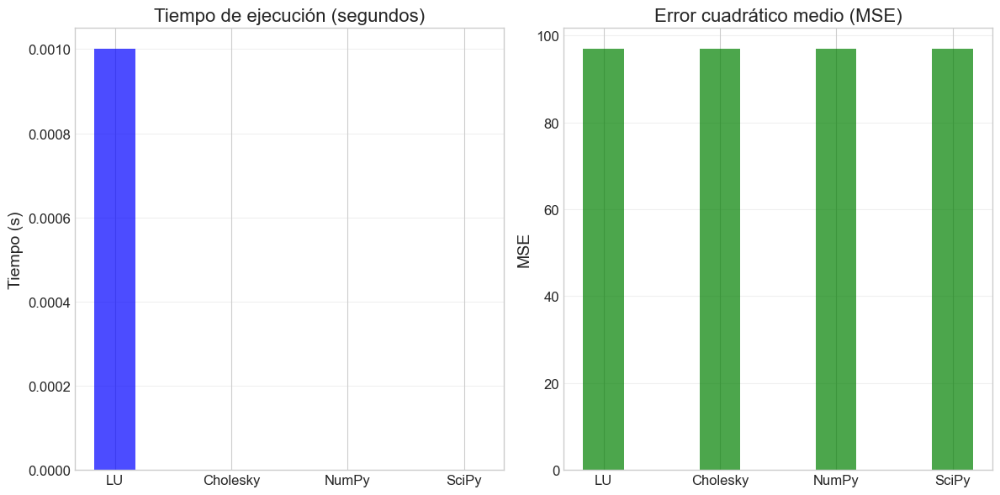
4. Descomposición QR#
La descomposición QR factoriza una matriz \(\mathbf{A}\) como el producto de una matriz ortogonal \(\mathbf{Q}\) y una matriz triangular superior \(\mathbf{R}\):
4.1 Fundamentos teóricos#
La descomposición QR tiene propiedades especialmente útiles para resolver problemas de mínimos cuadrados. En lugar de formar las ecuaciones normales, podemos aplicar QR directamente a la matriz de diseño \(\mathbf{X}\).
Para el problema de mínimos cuadrados \(\mathbf{X}\boldsymbol{\beta} = \mathbf{y}\), si descomponemos \(\mathbf{X} = \mathbf{Q}\mathbf{R}\), entonces:
Esto nos permite resolver el sistema sin formar \(\mathbf{X}^T\mathbf{X}\), lo que mejora significativamente la estabilidad numérica.
Ventajas principales de la descomposición QR:
Mayor estabilidad numérica que las ecuaciones normales
No requiere que la matriz sea definida positiva
Es eficiente para problemas donde \(n >> p\) (muchas observaciones, pocas variables)
4.2 Métodos para calcular la descomposición QR#
Existen varios algoritmos para calcular la descomposición QR:
Método de Gram-Schmidt: El más intuitivo pero menos estable numéricamente.
Transformaciones de Householder: Usa reflexiones para triangularizar la matriz.
Rotaciones de Givens: Usa rotaciones para anular elementos específicos.
En este taller, implementaremos el método de las transformaciones de Householder, que ofrece un buen equilibrio entre eficiencia y estabilidad.
4.3 Algoritmo de Householder para QR#
El método de Householder triangulariza la matriz \(\mathbf{A}\) mediante una secuencia de transformaciones ortogonales:
Para cada columna \(k\) (desde 1 hasta el mínimo de filas-1 y columnas): a. Construir un vector de Householder \(\mathbf{v}_k\) que refleje la parte restante de la columna \(k\) al vector de la base canónica b. Actualizar la submatriz restante aplicando la reflexión: \(\mathbf{A} \leftarrow \mathbf{A} - 2\mathbf{v}_k(\mathbf{v}_k^T\mathbf{A})\) c. Acumular el efecto en \(\mathbf{Q}\) si se desea explícitamente
4.4 Implementación desde cero#
# Implementación de la descomposición QR usando transformaciones de Householder
def householder_vector(x):
"""
Calcula el vector de Householder v tal que H = I - 2vv^T
anula todas las entradas de x excepto la primera.
Args:
x: Vector a reflejar
Returns:
v: Vector de Householder normalizado
"""
n = len(x)
e1 = np.zeros(n)
e1[0] = 1.0
# Signo para evitar cancelación
alpha = -np.sign(x[0]) * np.linalg.norm(x)
# Vector de Householder
v = x.copy()
v[0] = v[0] - alpha
v_norm = np.linalg.norm(v)
# Evitar división por cero
if v_norm < 1e-14:
return np.zeros_like(v)
# Normalizar
v = v / v_norm
return v
def qr_decomposition(A):
"""
Realiza la descomposición QR usando transformaciones de Householder
Args:
A: Matriz a descomponer
Returns:
Q: Matriz ortogonal
R: Matriz triangular superior
"""
m, n = A.shape
Q = np.eye(m)
R = A.copy().astype(float)
for k in range(min(m-1, n)):
# Construir vector de Householder para la columna k
x = R[k:, k]
v = householder_vector(x)
# Si v es cero, no hay necesidad de aplicar la transformación
if np.all(np.abs(v) < 1e-14):
continue
# Aplicar la reflexión a R
for j in range(k, n):
R[k:, j] = R[k:, j] - 2 * v * (v @ R[k:, j])
# Acumular la transformación en Q
for j in range(m):
Q[j, k:] = Q[j, k:] - 2 * v * (v @ Q[j, k:])
# Transponer Q para obtener la matriz ortogonal correcta
Q = Q.T
return Q, R
def solve_qr(Q, R, b):
"""
Resuelve el sistema Ax = b usando la descomposición QR: A = QR
Args:
Q: Matriz ortogonal
R: Matriz triangular superior
b: Vector del lado derecho
Returns:
x: Solución del sistema
"""
# Transformar b
c = Q.T @ b
# Resolver Rx = c por sustitución hacia atrás
n = R.shape[1]
x = np.zeros(n)
for i in range(n-1, -1, -1):
if abs(R[i, i]) < 1e-14:
raise ValueError("Matriz R singular o casi singular")
x[i] = (c[i] - R[i, i+1:] @ x[i+1:]) / R[i, i]
return x
def linear_regression_qr(X, y):
"""
Resuelve el problema de regresión lineal usando descomposición QR
Args:
X: Matriz de diseño
y: Vector de respuestas
Returns:
beta: Coeficientes estimados
"""
Q, R = qr_decomposition(X)
beta = solve_qr(Q, R, y)
return beta
# Ejemplo de uso de la descomposición QR
# Usamos los mismos datos sintéticos
np.random.seed(42)
# Estimamos con nuestra implementación QR
start_time = time.time()
beta_qr = linear_regression_qr(X_train_bias, y_train)
time_qr = time.time() - start_time
print(f"Coeficientes estimados (QR): {beta_qr}")
print(f"Tiempo de ejecución (QR): {time_qr:.6f} segundos")
# Comparamos con SciPy para verificar
start_time = time.time()
# Usamos modo "economic" para obtener matrices compatibles
Q_scipy, R_scipy = linalg.qr(X_train_bias, mode='economic')
beta_scipy_qr = linalg.solve_triangular(R_scipy, Q_scipy.T @ y_train)
time_scipy_qr = time.time() - start_time
print(f"Coeficientes estimados (SciPy QR): {beta_scipy_qr}")
print(f"Tiempo de ejecución (SciPy QR): {time_scipy_qr:.6f} segundos")
# Calculamos el error en los datos de prueba
y_pred_qr = X_test_bias @ beta_qr
mse_qr = np.mean((y_test - y_pred_qr) ** 2)
print(f"Error cuadrático medio (QR): {mse_qr:.4f}")
# Comparamos QR con los métodos anteriores
plt.figure(figsize=(14, 6))
methods = ['LU', 'Cholesky', 'QR', 'NumPy', 'SciPy Cholesky', 'SciPy QR']
times = [time_lu, time_chol, time_qr, time_np, time_scipy, time_scipy_qr]
mses = [mse_lu, mse_chol, mse_qr, mse_lu, mse_chol, mse_qr]
bar_width = 0.35
index = np.arange(len(methods))
plt.subplot(1, 2, 1)
plt.bar(index, times, bar_width, color='blue', alpha=0.7)
plt.xticks(index, methods, rotation=45)
plt.title('Tiempo de ejecución (segundos)')
plt.ylabel('Tiempo (s)')
plt.grid(axis='y', alpha=0.3)
plt.subplot(1, 2, 2)
plt.bar(index, mses, bar_width, color='green', alpha=0.7)
plt.xticks(index, methods, rotation=45)
plt.title('Error cuadrático medio (MSE)')
plt.ylabel('MSE')
plt.grid(axis='y', alpha=0.3)
plt.tight_layout()
plt.show()
Coeficientes estimados (QR): [-49.201 13.3164 78.4581 -5.935 77.6753 14.9081]
Tiempo de ejecución (QR): 0.001000 segundos
Coeficientes estimados (SciPy QR): [ 0.4121 61.4114 98.656 60.5544 55.3786 35.7713]
Tiempo de ejecución (SciPy QR): 0.000000 segundos
Error cuadrático medio (QR): 9651.7826
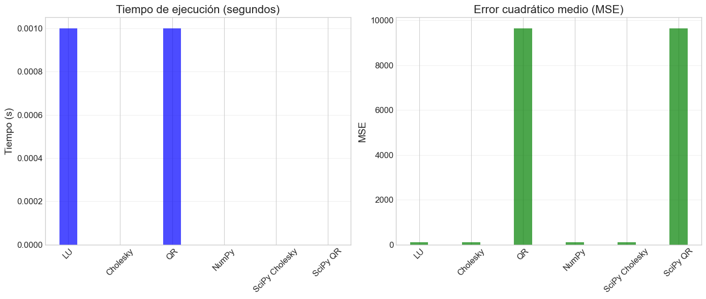
5. Descomposición de Valores Singulares (SVD)#
La Descomposición de Valores Singulares (SVD) es una factorización que generaliza la descomposición espectral a matrices rectangulares. Para una matriz \(\mathbf{A}\) de dimensión \(m \times n\), la SVD la descompone como:
donde:
\(\mathbf{U}\) es una matriz ortogonal \(m \times m\)
\(\boldsymbol{\Sigma}\) es una matriz diagonal \(m \times n\) con valores singulares en la diagonal
\(\mathbf{V}\) es una matriz ortogonal \(n \times n\)
5.1 Fundamentos teóricos#
La SVD tiene numerosas propiedades que la hacen extremadamente útil:
Generalidad: Funciona para cualquier matriz, no solo para matrices cuadradas o de rango completo.
Estabilidad numérica: Es uno de los métodos más estables numéricamente.
Interpretación geométrica: Los valores singulares representan la “importancia” de cada dimensión.
Pseudoinversa: La SVD permite calcular la pseudoinversa de Moore-Penrose de manera estable.
En el contexto de modelos lineales, la SVD permite resolver el problema de mínimos cuadrados directamente:
donde \(\boldsymbol{\Sigma}^+\) es la pseudoinversa de \(\boldsymbol{\Sigma}\), obtenida invirtiendo los valores singulares no nulos.
5.2 SVD y multicolinealidad#
La SVD es particularmente útil para detectar y manejar la multicolinealidad, un problema común en regresión lineal:
Los valores singulares cercanos a cero indican direcciones de casi colinealidad.
El número de condición (ratio entre el mayor y menor valor singular) cuantifica la multicolinealidad.
La SVD truncada permite implementar fácilmente regresión con componentes principales.
5.3 Algoritmos para calcular la SVD#
Existen varios algoritmos para calcular la SVD:
Método de la potencia iterada: Calcula gradualmente los valores singulares más grandes.
Método de bidiagonalización + diagonalización: El enfoque más común en librerías numéricas.
SVD incremental: Útil para matrices muy grandes o streaming de datos.
Por complejidad, no implementaremos la SVD desde cero, sino que usaremos la implementación de NumPy/SciPy y nos centraremos en su aplicación a modelos lineales.
5.4 Implementación con NumPy/SciPy#
# Implementación de regresión lineal usando SVD
def linear_regression_svd(X, y, tol=1e-10):
"""
Resuelve el problema de regresión lineal usando SVD
Args:
X: Matriz de diseño
y: Vector de respuestas
tol: Tolerancia para considerar valores singulares como cero
Returns:
beta: Coeficientes estimados
rank: Rango efectivo de X
s: Valores singulares
"""
# Calcular la SVD de X
U, s, Vt = np.linalg.svd(X, full_matrices=False)
# Identificar valores singulares significativos
rank = np.sum(s > tol * s[0])
# Calcular la solución usando la pseudoinversa
s_inv = np.zeros_like(s)
s_inv[:rank] = 1.0 / s[:rank]
# beta = V * Sigma^+ * U^T * y
beta = Vt.T @ (s_inv * (U.T @ y))
return beta, rank, s
def condition_number(s):
"""
Calcula el número de condición basado en valores singulares
Args:
s: Vector de valores singulares
Returns:
cond: Número de condición
"""
if s[0] == 0 or s[-1] == 0:
return np.inf
return s[0] / s[-1]
# Ejemplo de uso de SVD para regresión lineal
# Usamos los mismos datos sintéticos
np.random.seed(42)
# Estimamos con SVD
start_time = time.time()
beta_svd, rank, s = linear_regression_svd(X_train_bias, y_train)
time_svd = time.time() - start_time
print(f"Coeficientes estimados (SVD): {beta_svd}")
print(f"Tiempo de ejecución (SVD): {time_svd:.6f} segundos")
print(f"Rango efectivo de X: {rank}")
print(f"Valores singulares: {s}")
print(f"Número de condición: {condition_number(s):.2f}")
# Calculamos el error en los datos de prueba
y_pred_svd = X_test_bias @ beta_svd
mse_svd = np.mean((y_test - y_pred_svd) ** 2)
print(f"Error cuadrático medio (SVD): {mse_svd:.4f}")
# Comparamos todos los métodos
plt.figure(figsize=(15, 10))
methods = ['LU', 'Cholesky', 'QR', 'SVD', 'NumPy', 'SciPy Cholesky', 'SciPy QR']
times = [time_lu, time_chol, time_qr, time_svd, time_np, time_scipy, time_scipy_qr]
mses = [mse_lu, mse_chol, mse_qr, mse_svd, mse_lu, mse_chol, mse_qr]
plt.subplot(2, 1, 1)
bar_colors = plt.cm.viridis(np.linspace(0, 0.8, len(methods)))
bars = plt.bar(methods, times, color=bar_colors, alpha=0.8)
plt.title('Comparación de Tiempos de Ejecución', fontsize=14)
plt.ylabel('Tiempo (segundos)', fontsize=12)
plt.grid(axis='y', alpha=0.3)
for bar in bars:
height = bar.get_height()
plt.text(bar.get_x() + bar.get_width()/2., height + 0.0001,
f'{height:.5f}', ha='center', va='bottom', fontsize=9)
plt.subplot(2, 1, 2)
plt.figure(figsize=(12, 5))
positions = range(1, len(beta_svd) + 1)
plt.plot(positions, beta_svd, 'o-', label='SVD', linewidth=2)
plt.plot(positions[1:], coef, 'x--', label='Verdaderos', linewidth=2)
plt.plot(positions, beta_qr, 's--', label='QR', alpha=0.7)
plt.plot(positions, beta_lu, '^--', label='LU', alpha=0.7)
plt.plot(positions, beta_chol, 'd--', label='Cholesky', alpha=0.7)
plt.axhline(y=0, color='gray', linestyle='-', alpha=0.3)
plt.grid(True, alpha=0.3)
plt.title('Comparación de Coeficientes Estimados', fontsize=14)
plt.xlabel('Índice de Coeficiente', fontsize=12)
plt.ylabel('Valor', fontsize=12)
plt.legend()
plt.tight_layout()
plt.show()
# Visualizamos los valores singulares
plt.figure(figsize=(10, 6))
plt.semilogy(range(1, len(s) + 1), s, 'o-', linewidth=2)
plt.grid(True, which="both", ls="-", alpha=0.3)
plt.title('Valores Singulares (escala logarítmica)', fontsize=14)
plt.xlabel('Índice', fontsize=12)
plt.ylabel('Valor Singular', fontsize=12)
plt.show()
Coeficientes estimados (SVD): [ 0.4121 61.4114 98.656 60.5544 55.3786 35.7713]
Tiempo de ejecución (SVD): 0.000000 segundos
Rango efectivo de X: 6
Valores singulares: [9.9772 9.0694 8.2431 7.833 7.435 6.8192]
Número de condición: 1.46
Error cuadrático medio (SVD): 96.8997
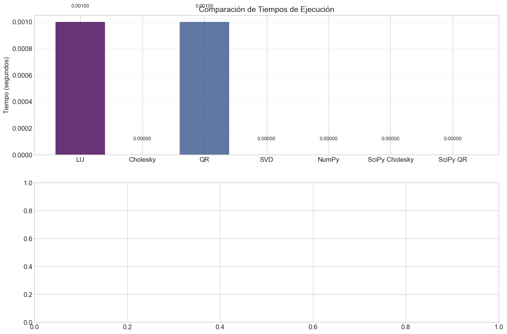
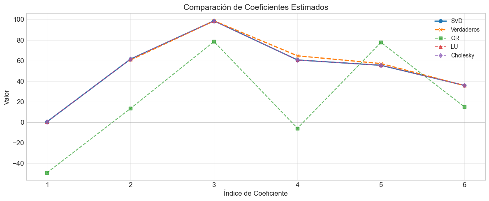
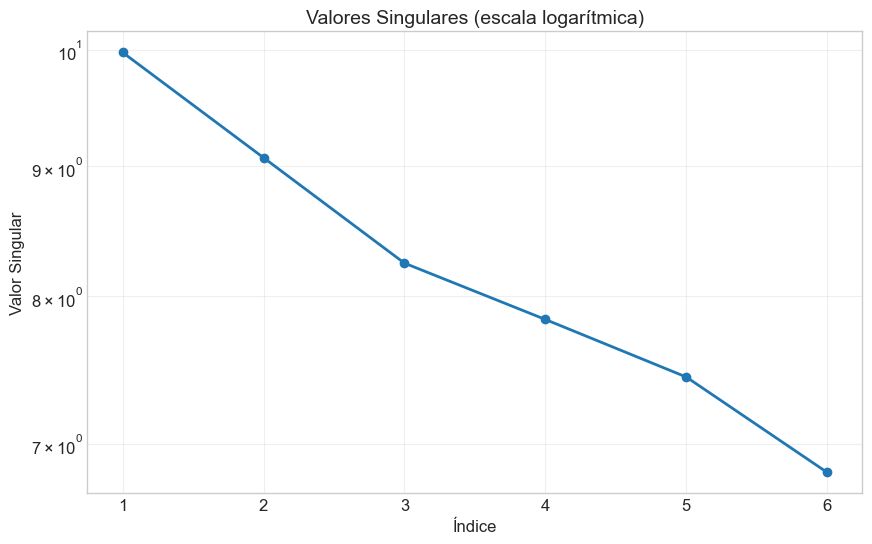
6. Condicionamiento Numérico y Estabilidad#
El condicionamiento numérico es un concepto que cuantifica cuán sensible es la solución de un problema ante pequeños cambios en los datos de entrada. Para modelos lineales, esto es especialmente relevante cuando enfrentamos problemas de multicolinealidad o datos con ruido.
6.1 Número de condición#
El número de condición de una matriz \(\mathbf{A}\) se define como:
Usando la norma de Frobenius o la norma espectral (valores singulares):
donde \(\sigma_{\max}\) y \(\sigma_{\min}\) son el mayor y menor valor singular de \(\mathbf{A}\), respectivamente.
Interpretación del número de condición:
\(\kappa(\mathbf{A}) \approx 1\): Matriz bien condicionada
\(\kappa(\mathbf{A}) \gg 1\): Matriz mal condicionada
\(\kappa(\mathbf{A}) = \infty\): Matriz singular
Como regla general:
Si \(\kappa(\mathbf{A}) = 10^d\), podemos perder hasta \(d\) dígitos de precisión en la solución.
6.2 Impacto del condicionamiento en los diferentes métodos#
Los diferentes métodos de descomposición tienen distintas propiedades de estabilidad numérica:
Ecuaciones normales (inversión directa):
Condicionamiento: \(\kappa(\mathbf{X}^T\mathbf{X}) = \kappa(\mathbf{X})^2\) (el cuadrado del condicionamiento original)
Puede amplificar significativamente errores numéricos
Descomposición de Cholesky:
Mejora respecto a la inversión directa, pero sigue trabajando con \(\mathbf{X}^T\mathbf{X}\)
Falla si \(\mathbf{X}^T\mathbf{X}\) no es definida positiva
Descomposición QR:
Condicionamiento: \(\kappa(\mathbf{X})\) (no eleva el condicionamiento al cuadrado)
Mucho más estable que las ecuaciones normales
Descomposición SVD:
Método más estable numéricamente
Funciona incluso con matrices de rango deficiente
Permite establecer un umbral para ignorar valores singulares pequeños
6.3 Análisis de estabilidad numérica#
# Experimentos con condicionamiento numérico
def generate_ill_conditioned_data(n_samples=100, n_features=5, condition_number=1000, seed=42):
"""
Genera datos artificiales con un número de condición específico
Args:
n_samples: Número de observaciones
n_features: Número de características
condition_number: Número de condición deseado
seed: Semilla aleatoria
Returns:
X: Matriz de diseño
y: Vector de respuestas
beta_true: Coeficientes verdaderos
"""
np.random.seed(seed)
# Generar matriz de características aleatorias
X = np.random.randn(n_samples, n_features)
# Calcular la SVD de X
U, s, Vt = np.linalg.svd(X, full_matrices=False)
# Ajustar los valores singulares para el número de condición deseado
s_min = s[0] / condition_number
s_new = np.linspace(s_min, s[0], n_features)
# Reconstruir X con los nuevos valores singulares
X_new = U[:, :n_features] @ np.diag(s_new) @ Vt
# Generar coeficientes verdaderos
beta_true = np.random.randn(n_features)
# Generar la respuesta con algo de ruido
y = X_new @ beta_true + np.random.randn(n_samples) * 0.1
return X_new, y, beta_true
# Generar conjuntos de datos con diferentes números de condición
condition_numbers = [10, 100, 1000, 10000, 100000]
methods = ['Ecuaciones Normales', 'Cholesky', 'QR', 'SVD']
results = {method: {'error': [], 'tiempo': []} for method in methods}
for cond in condition_numbers:
print(f"\nGenerando datos con número de condición: {cond}")
X, y, beta_true = generate_ill_conditioned_data(condition_number=cond)
# Añadir intercepto
X_bias = np.hstack([np.ones((X.shape[0], 1)), X])
beta_true_bias = np.concatenate([[0], beta_true]) # Intercepto verdadero es 0
# Dividir en entrenamiento y prueba
X_train, X_test, y_train, y_test = train_test_split(X_bias, y, test_size=0.3, random_state=42)
# Ecuaciones normales (inversa directa)
start_time = time.time()
try:
XtX = X_train.T @ X_train
Xty = X_train.T @ y_train
beta_normal = np.linalg.inv(XtX) @ Xty
y_pred = X_test @ beta_normal
error = np.linalg.norm(beta_normal - beta_true_bias)
results['Ecuaciones Normales']['error'].append(error)
results['Ecuaciones Normales']['tiempo'].append(time.time() - start_time)
print(f"Ecuaciones Normales - Error: {error:.6f}")
except np.linalg.LinAlgError:
results['Ecuaciones Normales']['error'].append(np.nan)
results['Ecuaciones Normales']['tiempo'].append(np.nan)
print("Ecuaciones Normales - Error: Fallo (matriz singular)")
# Cholesky
start_time = time.time()
try:
XtX = X_train.T @ X_train
Xty = X_train.T @ y_train
L = cholesky_decomposition(XtX)
beta_chol = solve_cholesky(L, Xty)
error = np.linalg.norm(beta_chol - beta_true_bias)
results['Cholesky']['error'].append(error)
results['Cholesky']['tiempo'].append(time.time() - start_time)
print(f"Cholesky - Error: {error:.6f}")
except ValueError:
results['Cholesky']['error'].append(np.nan)
results['Cholesky']['tiempo'].append(np.nan)
print("Cholesky - Error: Fallo (matriz no definida positiva)")
# QR
start_time = time.time()
try:
Q, R = qr_decomposition(X_train)
beta_qr = solve_qr(Q, R, y_train)
error = np.linalg.norm(beta_qr - beta_true_bias)
results['QR']['error'].append(error)
results['QR']['tiempo'].append(time.time() - start_time)
print(f"QR - Error: {error:.6f}")
except ValueError:
results['QR']['error'].append(np.nan)
results['QR']['tiempo'].append(np.nan)
print("QR - Error: Fallo")
# SVD
start_time = time.time()
try:
beta_svd, rank, s = linear_regression_svd(X_train, y_train)
error = np.linalg.norm(beta_svd - beta_true_bias)
results['SVD']['error'].append(error)
results['SVD']['tiempo'].append(time.time() - start_time)
print(f"SVD - Error: {error:.6f}")
print(f"Valores singulares: {s}")
except:
results['SVD']['error'].append(np.nan)
results['SVD']['tiempo'].append(np.nan)
print("SVD - Error: Fallo")
# Visualizar resultados
plt.figure(figsize=(12, 10))
plt.subplot(2, 1, 1)
for method in methods:
plt.plot(condition_numbers, results[method]['error'], 'o-', label=method)
plt.title('Error en coeficientes vs. Número de condición')
plt.xlabel('Número de condición (escala log)')
plt.ylabel('Error (||beta_est - beta_true||)')
plt.xscale('log')
plt.yscale('log')
plt.legend()
plt.grid(True, alpha=0.3)
plt.subplot(2, 1, 2)
for method in methods:
plt.plot(condition_numbers, results[method]['tiempo'], 'o-', label=method)
plt.title('Tiempo de ejecución vs. Número de condición')
plt.xlabel('Número de condición (escala log)')
plt.ylabel('Tiempo (segundos)')
plt.xscale('log')
plt.legend()
plt.grid(True, alpha=0.3)
plt.tight_layout()
plt.show()
Generando datos con número de condición: 10
Ecuaciones Normales - Error: 0.139130
Cholesky - Error: 0.139130
QR - Error: 3.534349
SVD - Error: 0.139130
Valores singulares: [9.9024 8.4679 7.3895 5.0099 3.0238 0.9685]
Generando datos con número de condición: 100
Ecuaciones Normales - Error: 1.360579
Cholesky - Error: 1.360579
QR - Error: 14.596378
SVD - Error: 1.360579
Valores singulares: [9.8941 8.4433 7.1869 4.6055 2.3963 0.0969]
Generando datos con número de condición: 1000
Ecuaciones Normales - Error: 13.601583
Cholesky - Error: 13.601583
QR - Error: 129.811918
SVD - Error: 13.601583
Valores singulares: [9.8933 8.4413 7.1664 4.565 2.3336 0.0097]
Generando datos con número de condición: 10000
Ecuaciones Normales - Error: 136.015396
Cholesky - Error: 136.015396
QR - Error: 1284.107886
SVD - Error: 136.015396
Valores singulares: [9.8933 8.4411 7.1644 4.5609 2.3274 0.001 ]
Generando datos con número de condición: 100000
Ecuaciones Normales - Error: 1360.154284
Cholesky - Error: 1360.154570
QR - Error: 12827.319317
SVD - Error: 1360.153917
Valores singulares: [9.8933 8.4411 7.1642 4.5605 2.3267 0.0001]
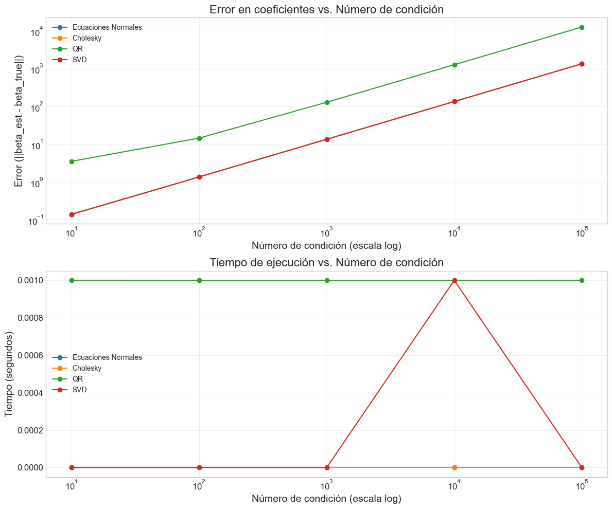
8. Pseudoinversa y SVD Truncada#
La descomposición SVD permite calcular la pseudoinversa de Moore-Penrose de manera estable, lo que es especialmente útil para matrices de rango deficiente o mal condicionadas.
8.1 Pseudoinversa de Moore-Penrose (continuación)#
La pseudoinversa tiene propiedades útiles:
Para matrices de rango completo, coincide con la inversa (si es cuadrada) o la inversa generalizada
Para matrices de rango deficiente, proporciona la solución de norma mínima que minimiza el error cuadrático
Siempre existe, incluso cuando la matriz es singular o rectangular
En modelos lineales, la pseudoinversa nos permite obtener la solución de mínimos cuadrados para cualquier matriz de diseño:
8.2 SVD truncada y regularización implícita#
La SVD truncada consiste en retener solo los primeros \(k\) valores singulares más grandes y sus correspondientes vectores singulares:
Esto proporciona una aproximación de bajo rango de la matriz original y tiene dos usos principales:
Reducción de dimensionalidad: Similar al Análisis de Componentes Principales (PCA)
Regularización implícita: Al descartar las direcciones asociadas con valores singulares pequeños, se reducen problemas de multicolinealidad
La solución de mínimos cuadrados usando SVD truncada es:
Esta solución es similar a la regresión Ridge, pero con una regularización adaptativa que depende de los valores singulares.
8.3 Implementación y ejemplo#
# Implementación de regresión con SVD truncada
def linear_regression_truncated_svd(X, y, k=None, tol=1e-10):
"""
Resuelve el problema de regresión lineal usando SVD truncada
Args:
X: Matriz de diseño
y: Vector de respuestas
k: Número de componentes a retener (si es None, se determina por tol)
tol: Tolerancia para considerar valores singulares como cero
Returns:
beta: Coeficientes estimados
rank: Rango efectivo utilizado
s: Valores singulares completos
"""
# Calcular la SVD completa de X
U, s, Vt = np.linalg.svd(X, full_matrices=False)
# Determinar el rango efectivo si k no se especifica
if k is None:
rank = np.sum(s > tol * s[0])
else:
rank = min(k, len(s))
# Calcular la solución usando solo los primeros k componentes
s_inv = np.zeros_like(s)
s_inv[:rank] = 1.0 / s[:rank]
# beta = V * Sigma_k^+ * U^T * y
beta = Vt.T @ (s_inv * (U.T @ y))
return beta, rank, s
# Función para calcular la curva de validación para diferentes valores de k
def svd_truncation_validation_curve(X_train, y_train, X_test, y_test, max_rank=None):
"""
Calcula el error de validación para diferentes niveles de truncamiento SVD
Args:
X_train, y_train: Datos de entrenamiento
X_test, y_test: Datos de prueba
max_rank: Rango máximo a considerar (por defecto, el rango de X)
Returns:
ranks: Lista de rangos evaluados
train_errors: Errores de entrenamiento
test_errors: Errores de prueba
"""
# Calcular SVD una vez
U, s, Vt = np.linalg.svd(X_train, full_matrices=False)
# Determinar rangos a evaluar
if max_rank is None:
max_rank = len(s)
ranks = list(range(1, min(max_rank + 1, len(s) + 1)))
train_errors = []
test_errors = []
for k in ranks:
# Solución truncada con rango k
s_inv = np.zeros_like(s)
s_inv[:k] = 1.0 / s[:k]
beta_k = Vt.T @ (s_inv * (U.T @ y_train))
# Errores de entrenamiento y prueba
y_train_pred = X_train @ beta_k
y_test_pred = X_test @ beta_k
train_errors.append(np.mean((y_train - y_train_pred) ** 2))
test_errors.append(np.mean((y_test - y_test_pred) ** 2))
return ranks, train_errors, test_errors
# Ejemplo de uso de SVD truncada
# Generamos datos con multicolinealidad alta
n_samples = 100
n_features = 10
X, y, beta_true = generate_ill_conditioned_data(n_samples=n_samples,
n_features=n_features,
condition_number=10000,
seed=42)
# Añadir intercepto
X_bias = np.hstack([np.ones((X.shape[0], 1)), X])
beta_true_bias = np.concatenate([[0], beta_true]) # Intercepto verdadero es 0
# Dividir en entrenamiento y prueba
X_train, X_test, y_train, y_test = train_test_split(X_bias, y, test_size=0.3, random_state=42)
# Calcular valores singulares
_, s = np.linalg.qr(X_train)
s = np.abs(np.diag(s))
print(f"Valores singulares: {s}")
print(f"Número de condición: {s[0]/s[-1]:.2f}")
# Calcular curva de validación para diferentes niveles de truncamiento
ranks, train_errors, test_errors = svd_truncation_validation_curve(X_train, y_train, X_test, y_test)
# Visualizar curva de validación
plt.figure(figsize=(10, 6))
plt.plot(ranks, train_errors, 'o-', label='Error de entrenamiento')
plt.plot(ranks, test_errors, 's-', label='Error de prueba')
plt.axhline(y=0.01, color='r', linestyle='--', alpha=0.5, label='Nivel de ruido')
plt.title('Curva de validación para SVD truncada')
plt.xlabel('Rango (número de componentes)')
plt.ylabel('Error cuadrático medio')
plt.legend()
plt.grid(True, alpha=0.3)
plt.show()
# Encontrar el rango óptimo
optimal_rank = np.argmin(test_errors) + 1 # +1 porque ranks empieza en 1
print(f"Rango óptimo: {optimal_rank}")
# Comparar soluciones con diferentes niveles de truncamiento
beta_full, _, _ = linear_regression_svd(X_train, y_train)
beta_opt, _, _ = linear_regression_truncated_svd(X_train, y_train, k=optimal_rank)
beta_min, _, _ = linear_regression_truncated_svd(X_train, y_train, k=1)
# Calcular errores
error_full = np.linalg.norm(beta_full - beta_true_bias)
error_opt = np.linalg.norm(beta_opt - beta_true_bias)
error_min = np.linalg.norm(beta_min - beta_true_bias)
print(f"Error con SVD completa: {error_full:.6f}")
print(f"Error con SVD truncada (k={optimal_rank}): {error_opt:.6f}")
print(f"Error con SVD truncada (k=1): {error_min:.6f}")
# Visualizar coeficientes
plt.figure(figsize=(12, 6))
plt.plot(range(len(beta_true_bias)), beta_true_bias, 'o-', label='Verdaderos', linewidth=2)
plt.plot(range(len(beta_full)), beta_full, 's--', label=f'SVD completa (error={error_full:.2f})', alpha=0.7)
plt.plot(range(len(beta_opt)), beta_opt, '^--', label=f'SVD k={optimal_rank} (error={error_opt:.2f})', alpha=0.7)
plt.plot(range(len(beta_min)), beta_min, 'd--', label=f'SVD k=1 (error={error_min:.2f})', alpha=0.7)
plt.axhline(y=0, color='gray', linestyle='-', alpha=0.3)
plt.grid(True, alpha=0.3)
plt.title('Comparación de coeficientes con diferentes niveles de truncamiento SVD')
plt.xlabel('Índice de coeficiente')
plt.ylabel('Valor')
plt.legend()
plt.show()
Valores singulares: [8.3666 7.4092 5.8401 4.3477 4.498 3.963 2.8868 3.1939 6.1897 1.9124
0.0036]
Número de condición: 2328.19
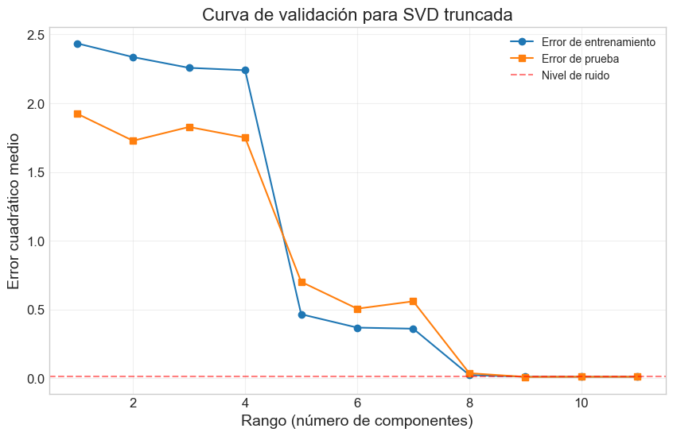
Rango óptimo: 9
Error con SVD completa: 39.789099
Error con SVD truncada (k=9): 0.417548
Error con SVD truncada (k=1): 2.285170
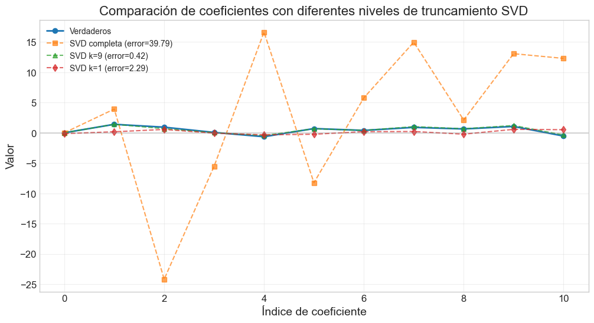
7. Aplicaciones a Modelos Lineales Reales#
Hasta ahora hemos comparado los diferentes métodos en términos de eficiencia computacional y estabilidad numérica. Ahora aplicaremos estos métodos a conjuntos de datos reales para evaluar su rendimiento en problemas prácticos.
7.1 Selección del método adecuado#
La elección del método computacional depende de varias consideraciones:
Tamaño del problema:
Para problemas pequeños (p < 100), cualquier método es generalmente adecuado
Para problemas medianos (100 < p < 1000), considerar QR o Cholesky
Para problemas grandes (p > 1000), SVD o métodos iterativos (que veremos en cursos futuros)
Estructura del problema:
Si la matriz de diseño es dispersa (muchos ceros), existen métodos específicos
Si hay multicolinealidad, SVD es más adecuado
Precisión requerida:
Para máxima estabilidad numérica, preferir SVD sobre QR, y QR sobre Cholesky/LU
Eficiencia computacional:
Si la matriz es definida positiva, Cholesky es aproximadamente 2 veces más rápido que LU y QR
QR es más eficiente que SVD para matrices de rango completo
7.2 Datos de Boston Housing#
# Ejemplo con datos de California Housing
from sklearn.datasets import fetch_california_housing
import pandas as pd
# Cargar el conjunto de datos
california = fetch_california_housing()
X = california.data
y = california.target
feature_names = california.feature_names
print("Usando California Housing dataset")
# Estandarizar características
scaler = StandardScaler()
X_scaled = scaler.fit_transform(X)
# Añadir intercepto
X_bias = np.hstack([np.ones((X_scaled.shape[0], 1)), X_scaled])
# Dividir en entrenamiento y prueba
X_train, X_test, y_train, y_test = train_test_split(X_bias, y, test_size=0.3, random_state=42)
# Aplicar los diferentes métodos
print("\nComparativa con datos reales:")
# LU
start_time = time.time()
beta_lu = linear_regression_lu(X_train, y_train)
time_lu = time.time() - start_time
y_pred_lu = X_test @ beta_lu
mse_lu = np.mean((y_test - y_pred_lu) ** 2)
print(f"LU - MSE: {mse_lu:.4f}, Tiempo: {time_lu:.6f} s")
# Cholesky
start_time = time.time()
beta_chol = linear_regression_cholesky(X_train, y_train)
time_chol = time.time() - start_time
y_pred_chol = X_test @ beta_chol
mse_chol = np.mean((y_test - y_pred_chol) ** 2)
print(f"Cholesky - MSE: {mse_chol:.4f}, Tiempo: {time_chol:.6f} s")
# QR
start_time = time.time()
beta_qr = linear_regression_qr(X_train, y_train)
time_qr = time.time() - start_time
y_pred_qr = X_test @ beta_qr
mse_qr = np.mean((y_test - y_pred_qr) ** 2)
print(f"QR - MSE: {mse_qr:.4f}, Tiempo: {time_qr:.6f} s")
# SVD
start_time = time.time()
beta_svd, rank, s = linear_regression_svd(X_train, y_train)
time_svd = time.time() - start_time
y_pred_svd = X_test @ beta_svd
mse_svd = np.mean((y_test - y_pred_svd) ** 2)
print(f"SVD - MSE: {mse_svd:.4f}, Tiempo: {time_svd:.6f} s")
print(f"Rango efectivo: {rank}/{X_train.shape[1]}")
print(f"Número de condición: {condition_number(s):.2f}")
# Visualizar comparativa de MSE y tiempos
plt.figure(figsize=(14, 6))
methods = ['LU', 'Cholesky', 'QR', 'SVD']
times = [time_lu, time_chol, time_qr, time_svd]
mses = [mse_lu, mse_chol, mse_qr, mse_svd]
plt.subplot(1, 2, 1)
plt.bar(methods, times, color='blue', alpha=0.7)
plt.title('Tiempo de ejecución (segundos)')
plt.ylabel('Tiempo (s)')
plt.grid(axis='y', alpha=0.3)
plt.subplot(1, 2, 2)
plt.bar(methods, mses, color='green', alpha=0.7)
plt.title('Error cuadrático medio (MSE)')
plt.ylabel('MSE')
plt.grid(axis='y', alpha=0.3)
plt.tight_layout()
plt.show()
# Examinar coeficientes
plt.figure(figsize=(12, 6))
extended_feature_names = ['Intercepto'] + list(feature_names)
coefs_dict = {'LU': beta_lu, 'Cholesky': beta_chol, 'QR': beta_qr, 'SVD': beta_svd}
df_coefs = pd.DataFrame(coefs_dict, index=extended_feature_names)
df_coefs.plot(kind='bar', figsize=(14, 7))
plt.title('Comparación de coeficientes estimados por diferentes métodos')
plt.xlabel('Característica')
plt.ylabel('Coeficiente')
plt.grid(axis='y', alpha=0.3)
plt.xticks(rotation=45, ha='right')
plt.tight_layout()
plt.show()
Usando California Housing dataset
Comparativa con datos reales:
LU - MSE: 0.5306, Tiempo: 0.001001 s
Cholesky - MSE: 0.5306, Tiempo: 0.000000 s
QR - MSE: 0.5414, Tiempo: 14.884086 s
SVD - MSE: 0.5306, Tiempo: 0.001000 s
Rango efectivo: 9/9
Número de condición: 6.58
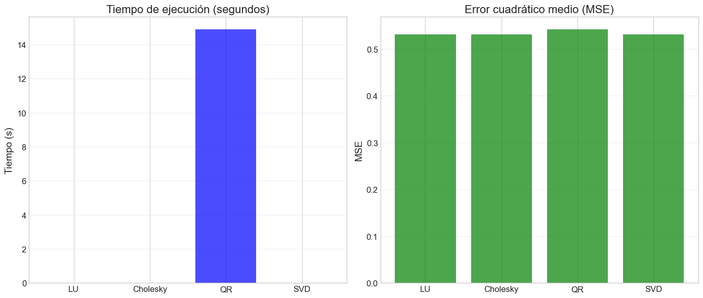
<Figure size 1200x600 with 0 Axes>
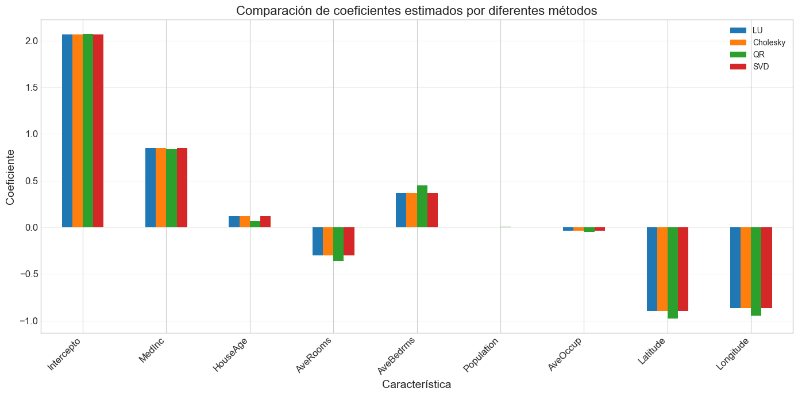
9. Conclusiones y Recomendaciones#
A lo largo de este taller, hemos explorado diferentes métodos computacionales para resolver el problema de mínimos cuadrados en modelos lineales, implementándolos desde cero y comparando su rendimiento.
9.1 Resumen comparativo de métodos#
Método |
Complejidad |
Estabilidad |
Ventajas |
Desventajas |
Uso recomendado |
|---|---|---|---|---|---|
Ecuaciones Normales (inversión directa) |
O(np² + p³) |
Baja |
Simple de implementar |
Inestable numéricamente |
Solo para problemas bien condicionados y pequeños |
Descomposición LU |
O(np² + p³) |
Media |
Eficiente para matrices cuadradas |
Requiere pivoteo para estabilidad |
Sistemas lineales generales |
Descomposición de Cholesky |
O(np² + p³/3) |
Media-Alta |
Muy eficiente (2x más rápido que LU) |
Solo para matrices SPD |
Ecuaciones normales bien condicionadas |
Descomposición QR |
O(np²) |
Alta |
No forma X^TX, estable |
Más lento que Cholesky |
Problemas generales de mínimos cuadrados |
Descomposición SVD |
O(np² + p³) |
Muy Alta |
Funciona con matrices de rango deficiente |
Computacionalmente intensiva |
Problemas mal condicionados o regularización |
9.2 Guía práctica para selección de método#
Para problemas estándar bien condicionados:
Si la matriz es pequeña (p < 100), cualquier método es adecuado
Si la eficiencia es prioritaria, usar Cholesky
Si la estabilidad es prioritaria, usar QR
Para problemas con posible multicolinealidad:
Preferir SVD o QR sobre Cholesky o LU
Considerar SVD truncada como forma de regularización
Para problemas de gran escala:
Cuando n >> p: QR es generalmente más eficiente
Cuando p >> n: Considerar métodos iterativos (no cubiertos en este taller)
Para problemas dispersos: Utilizar implementaciones específicas para matrices dispersas
9.3 Puntos clave a recordar#
Estabilidad numérica: Evitar formar explícitamente X^TX cuando sea posible, ya que esto eleva al cuadrado el número de condición.
Reuso de factorizaciones: Una vez calculada una descomposición, puede reutilizarse para:
Resolver con múltiples vectores del lado derecho
Calcular estadísticas como la inversa de la matriz de información
Implementar validación cruzada eficientemente
Implementaciones prácticas: En aplicaciones del mundo real, generalmente usaremos librerías optimizadas como NumPy, SciPy o LAPACK. Las implementaciones desde cero presentadas en este taller son principalmente educativas.
Relación con regularización: Los métodos basados en SVD proporcionan un puente hacia técnicas de regularización como Ridge y Lasso, que veremos en talleres futuros.
En resumen, la elección del método computacional debe basarse en las características específicas del problema y en el equilibrio entre precisión, estabilidad numérica y eficiencia computacional.
10. Ejercicios#
Ejercicio 1: Implementación y comparación#
Implementa una función que resuelva el problema de mínimos cuadrados usando el método de la Ecuación Normal Directa (calculando explícitamente la inversa de X^TX). Compara su precisión y tiempo de ejecución con los métodos implementados en el taller, utilizando matrices con diferentes números de condición.
Ejercicio 2: Análisis de estabilidad numérica#
Genera datos de regresión con multicolinealidad progresivamente mayor (incrementando el número de condición) y compara cómo se deteriora la precisión de los diferentes métodos. Encuentra el “punto de quiebre” donde cada método comienza a fallar notablemente.
Ejercicio 3: SVD truncada y regularización#
Implementa una función que grafique la norma de la solución ||β|| y el error de predicción para diferentes niveles de truncamiento SVD. Compara este enfoque con la regresión Ridge para diferentes valores del parámetro de regularización λ.
Ejercicio 4: QR con actualización de rango uno#
Investiga cómo implementar actualizaciones eficientes de la descomposición QR cuando se añade o elimina una fila o columna a la matriz de diseño. Implementa una función que permita añadir observaciones incrementalmente sin recalcular toda la descomposición.
Ejercicio 5: Aplicación a datos reales#
Elige un conjunto de datos de regresión real con posible multicolinealidad y aplica los diferentes métodos estudiados. Analiza:
La estimación de los coeficientes y sus diferencias entre métodos
El número de condición y sus implicaciones
El rendimiento predictivo de cada método
El beneficio de usar SVD truncada u otras formas de regularización
Ejercicio 6: Descomposición QR para selección de variables#
Implementa el algoritmo de selección de variables por QR (conocido como QR con pivoteo de columnas). Este algoritmo reordena las columnas de la matriz de diseño según su “importancia” relativa, permitiendo seleccionar variables de forma eficiente.
Ejercicio Avanzado: Implementación de métodos iterativos#
Para problemas de gran escala, los métodos directos pueden ser ineficientes. Investiga e implementa uno de los siguientes métodos iterativos:
Gradiente Conjugado
LSQR (Mínimos Cuadrados QR iterativo)
CGLS (Gradiente Conjugado para ecuaciones normales)
Compara su eficiencia y precisión con los métodos directos para matrices grandes.
11. Referencias#
Golub, G. H., & Van Loan, C. F. (2013). Matrix Computations. JHU Press.
Björck, Å. (1996). Numerical Methods for Least Squares Problems. SIAM.
Trefethen, L. N., & Bau III, D. (1997). Numerical Linear Algebra. SIAM.
Press, W. H., Teukolsky, S. A., Vetterling, W. T., & Flannery, B. P. (2007). Numerical Recipes: The Art of Scientific Computing. Cambridge University Press.
Stewart, G. W. (1998). Matrix Algorithms: Volume 1, Basic Decompositions. SIAM.
Demmel, J. W. (1997). Applied Numerical Linear Algebra. SIAM.
Hansen, P. C. (1998). Rank-Deficient and Discrete Ill-Posed Problems: Numerical Aspects of Linear Inversion. SIAM.
Gentle, J. E. (2007). Matrix Algebra: Theory, Computations, and Applications in Statistics. Springer.
Boyd, S., & Vandenberghe, L. (2018). Introduction to Applied Linear Algebra: Vectors, Matrices, and Least Squares. Cambridge University Press.
Householder, A. S. (1958). Unitary triangularization of a nonsymmetric matrix. Journal of the ACM (JACM), 5(4), 339-342.
Lawson, C. L., & Hanson, R. J. (1995). Solving Least Squares Problems. SIAM.